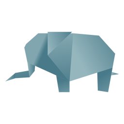

Camel
- Camels have three sets of eyelids and two rows of eyelashes to keep sand out of their eyes.
- Camels are very strong and can carry up to 900 pounds for 25 miles a day.
- When a camel finally does find water, he can drink up to 40 gallons in one go.

Chameleon
- Skin crystals enable them to change colour at will.
- Their eyes can swil around in two diffrent dirrections.
- There are more then 160 species of chameleon in the world.

Panda
- Giant pandas spend 10-16 hours a day feeding, mainly on bamboo.
- On average, pandas poo 40 times a day.
- They are great camoflage for there envoirnment.
- Pandas need at least 2 different bamboo species in their range to avoid starvation

Elephant
- They're the worlds LARGEST land animal.
- There tusks are actualy teeth.
- They communicate through vibrations.
- Elephants never forgets.

Pigeon
- Pigeons are incredibly complex and intelligent animals
- Pigeons are renowned for their outstanding navigational abilities
- Pigeons have excellent hearing abilities.

Puppy
- Their sense of smell is at least 40x better than ours.
- Dogs don't sweat like we do.
- Dogs are as intelligent as a two-year-old.

Frog
- One gram of the toxin produced by the skin of the golden poison dart frog could kill 100,000 people.
- Some frogs can drink through their skin.
- Some frog can jump upto 20 times of their length of body.

Cicada
- All cicada species in North America came from a common ancestor
- cicada species switches from being on a 13-year cycle to a 17-year cycle

Teddy
- The Teddy Bears’ Picnic song was originally called The Teddy Bear Two Step
- Winnie the Pooh was based on a real bear
- The world's smallest stitched teddy bear is a mere 0.29 inches tall!